pacman::p_load(sf, tmap, tidyverse)Hands on Exercise 08: Choropleth Mapping with R
1. Overview
In this chapter, you will learn how to plot functional and truthful choropleth maps by using an R package called tmap package.
Things you will learn
Data Preparation
- 2.1 Joining the attribute data and geospatial data
⭐3.1 Plotting a choropleth map quickly by using qtm()
3.2 Creating a choropleth map by using tmap’s elements
3.3 Data classification methods
3.4 Change color
3.5 Different style and theme of plot
3.6 Combine little multiple map
2.Getting Started
In this hands-on exercise, the key R package use is tmap package in R. Beside tmap package, four other R packages will be used. They are:
readr for importing delimited text file,
tidyr for tidying data,
dplyr for wrangling data and
sf for handling geospatial data.
Among the four packages, readr, tidyr and dplyr are part of tidyverse package.
The code chunk below uses the st_read() function of sf package to import MP14_SUBZONE_WEB_PL shapefile into R as a simple feature data frame called mpsz.
mpsz <- st_read(dsn = "data/geospatial",
layer = "MP14_SUBZONE_WEB_PL")Reading layer `MP14_SUBZONE_WEB_PL' from data source
`C:\Trista0114\ISSS608\hands-onEx\hands-onEx08\data\geospatial'
using driver `ESRI Shapefile'
Simple feature collection with 323 features and 15 fields
Geometry type: MULTIPOLYGON
Dimension: XY
Bounding box: xmin: 2667.538 ymin: 15748.72 xmax: 56396.44 ymax: 50256.33
Projected CRS: SVY21Only the first ten records are displayed because the dataset is being printed in a truncated format. In R, when working with sf (Simple Features) objects or data frames, the default behavior of the print() function is to show only the first few rows (typically 10) to prevent overwhelming the console with too much data.
mpszSimple feature collection with 323 features and 15 fields
Geometry type: MULTIPOLYGON
Dimension: XY
Bounding box: xmin: 2667.538 ymin: 15748.72 xmax: 56396.44 ymax: 50256.33
Projected CRS: SVY21
First 10 features:
OBJECTID SUBZONE_NO SUBZONE_N SUBZONE_C CA_IND PLN_AREA_N
1 1 1 MARINA SOUTH MSSZ01 Y MARINA SOUTH
2 2 1 PEARL'S HILL OTSZ01 Y OUTRAM
3 3 3 BOAT QUAY SRSZ03 Y SINGAPORE RIVER
4 4 8 HENDERSON HILL BMSZ08 N BUKIT MERAH
5 5 3 REDHILL BMSZ03 N BUKIT MERAH
6 6 7 ALEXANDRA HILL BMSZ07 N BUKIT MERAH
7 7 9 BUKIT HO SWEE BMSZ09 N BUKIT MERAH
8 8 2 CLARKE QUAY SRSZ02 Y SINGAPORE RIVER
9 9 13 PASIR PANJANG 1 QTSZ13 N QUEENSTOWN
10 10 7 QUEENSWAY QTSZ07 N QUEENSTOWN
PLN_AREA_C REGION_N REGION_C INC_CRC FMEL_UPD_D X_ADDR
1 MS CENTRAL REGION CR 5ED7EB253F99252E 2014-12-05 31595.84
2 OT CENTRAL REGION CR 8C7149B9EB32EEFC 2014-12-05 28679.06
3 SR CENTRAL REGION CR C35FEFF02B13E0E5 2014-12-05 29654.96
4 BM CENTRAL REGION CR 3775D82C5DDBEFBD 2014-12-05 26782.83
5 BM CENTRAL REGION CR 85D9ABEF0A40678F 2014-12-05 26201.96
6 BM CENTRAL REGION CR 9D286521EF5E3B59 2014-12-05 25358.82
7 BM CENTRAL REGION CR 7839A8577144EFE2 2014-12-05 27680.06
8 SR CENTRAL REGION CR 48661DC0FBA09F7A 2014-12-05 29253.21
9 QT CENTRAL REGION CR 1F721290C421BFAB 2014-12-05 22077.34
10 QT CENTRAL REGION CR 3580D2AFFBEE914C 2014-12-05 24168.31
Y_ADDR SHAPE_Leng SHAPE_Area geometry
1 29220.19 5267.381 1630379.3 MULTIPOLYGON (((31495.56 30...
2 29782.05 3506.107 559816.2 MULTIPOLYGON (((29092.28 30...
3 29974.66 1740.926 160807.5 MULTIPOLYGON (((29932.33 29...
4 29933.77 3313.625 595428.9 MULTIPOLYGON (((27131.28 30...
5 30005.70 2825.594 387429.4 MULTIPOLYGON (((26451.03 30...
6 29991.38 4428.913 1030378.8 MULTIPOLYGON (((25899.7 297...
7 30230.86 3275.312 551732.0 MULTIPOLYGON (((27746.95 30...
8 30222.86 2208.619 290184.7 MULTIPOLYGON (((29351.26 29...
9 29893.78 6571.323 1084792.3 MULTIPOLYGON (((20996.49 30...
10 30104.18 3454.239 631644.3 MULTIPOLYGON (((24472.11 29...Next, we will import respopagsex2011to2020.csv file into RStudio and save the file into an R dataframe called popagsex.
popdata <- read_csv("data/aspatial/respopagesextod2011to2020.csv")2.1 Data Preparation
Before a thematic map can be prepared, you are required to prepare a data table with year 2020 values. The data table should include the variables PA, SZ, YOUNG, ECONOMY ACTIVE, AGED, TOTAL, DEPENDENCY.
- YOUNG: age group 0 to 4 until age groyup 20 to 24,
- ECONOMY ACTIVE: age group 25-29 until age group 60-64,
- AGED: age group 65 and above,
- TOTAL: all age group, and
- DEPENDENCY: the ratio between young and aged against economy active group
The following data wrangling and transformation functions will be used:
- pivot_wider() of tidyr package, and
- mutate(), filter(), group_by() and select() of dplyr package
popdata2020 <- popdata %>%
filter(Time == 2020) %>%
group_by(PA, SZ, AG) %>%
summarise(`POP` = sum(`Pop`)) %>% #Computes the total population (POP) for each PA, SZ, AG group.
ungroup() %>% #Removes grouping, allowing further transformations.
pivot_wider(names_from=AG,
values_from=POP) %>% #Converts the dataset from long format (where each row represents a single age group) to wide format, with columns for different age groups.
mutate(YOUNG = rowSums(.[3:6])
+rowSums(.[12])) %>% #Sums the population for young age groups in columns 3 to 6 and column 12.
mutate(`ECONOMY ACTIVE` = rowSums(.[7:11])+
rowSums(.[13:15]))%>% #sums the population for working-age individuals from columns 7 to 11 and 13 to 15
mutate(`AGED`=rowSums(.[16:21])) %>% #All Age Groups
mutate(`TOTAL`=rowSums(.[3:21])) %>%
mutate(`DEPENDENCY` = (`YOUNG` + `AGED`)
/`ECONOMY ACTIVE`) %>%
select(`PA`, `SZ`, `YOUNG`,
`ECONOMY ACTIVE`, `AGED`,
`TOTAL`, `DEPENDENCY`) Connect the population attribute data (popdata2020) and the geographical spatial data (mpsz) to form a complete geographical attribute data frame (mpsz_pop2020), and finally save it in .rds format.- Convert the values of PA and SZ fields to uppercase (uppercase)
- Because the SUBZONE_N and PLN_AREA_N fields in geographic data (mpsz) are both uppercase, you need to ensure that the PA and SZ of popdata2020 are also uppercase to avoid matching failures. mutate_at() is used to modify fields in batches, and toupper() converts them to uppercase.
popdata2020 <- popdata2020 %>%
mutate_at(.vars = vars(PA, SZ),
.funs = funs(toupper)) %>%
filter(`ECONOMY ACTIVE` > 0)- Use left_join() to merge two datasets
- mpsz is geospatial data (sf object), containing geographic boundaries (polygons). popdata2020 is population attribute data, including population, economic activities and other information. Merged match fields
- mpsz is the left table, which means that even if popdata2020 has no matching data, all records of mpsz will still be retained. popdata2020 is the right table. If SZ cannot match SUBZONE_N, the population data of the district will be NA.
mpsz_pop2020 <- left_join(mpsz, popdata2020,
by = c("SUBZONE_N" = "SZ"))- Stored it as .rds format
write_rds(mpsz_pop2020, "data/rds/mpszpop2020.rds")3. Choropleth Mapping Geospatial Data Using tmap
3.1 Plotting a thematic map quickly by using qtm()
Things to learn form code
tmap_mode(“plot”): Set the static map mode to display the map in static map (ggplot2-like) format. tmap_mode(“view”): If changed to “view”, an interactive map (Leaflet-based) will be generated, which can be zoomed and clicked to view detailed information.
fill = “DEPENDENCY”： Fills the map’s color based on the DEPENDENCY field data. The higher the value, the more people that need the support.
tmap_mode("plot")
qtm(mpsz_pop2020,
fill = "DEPENDENCY")
🛠️3.2 Creating a choropleth map by using tmap’s elements
The disadvantage of qtm() is that it makes aesthetics of individual layers harder to control. To draw a high quality cartographic choropleth map as shown in the figure below, tmap’s drawing elements should be used.
tm_shape(mpsz_pop2020)+
tm_fill("DEPENDENCY",
style = "quantile",
palette = "Blues",
title = "Dependency ratio") +
tm_layout(main.title = "Distribution of Dependency Ratio by planning subzone",
main.title.position = "center",
main.title.size = 1.2,
legend.height = 0.45,
legend.width = 0.35,
frame = TRUE) +
tm_borders(alpha = 0.5) +
tm_compass(type="8star", size = 2) +
tm_scale_bar() +
tm_grid(alpha =0.2) +
tm_credits("Source: Planning Sub-zone boundary from Urban Redevelopment Authorithy (URA)\n and Population data from Department of Statistics DOS",
position = c("left", "bottom"))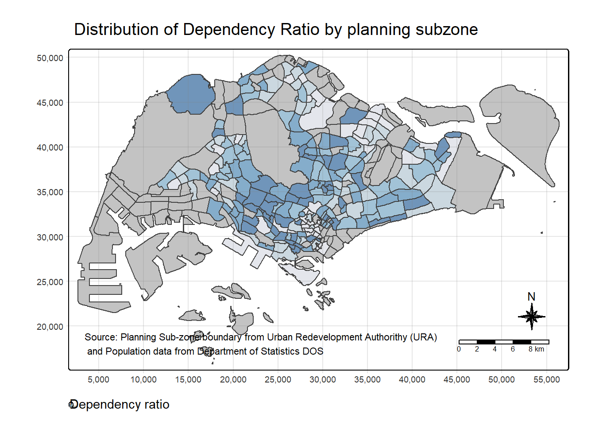
Below is the step to draw the plot by using tmap function
In the code chunk below, tm_shape() is used to define the input data (i.e mpsz_pop2020) and tm_polygons() is used to draw the planning subzone polygons
tm_shape(mpsz_pop2020) +
tm_polygons()
Assign the target variable such as Dependency to tm_polygons().
Things to learn form code
- The default interval binning used to draw the choropleth map is called “pretty”.
- The default colour scheme used is
YlOrRdof ColorBrewer. - By default, Missing value will be shaded in grey.
tm_shape(mpsz_pop2020)+
tm_polygons("DEPENDENCY")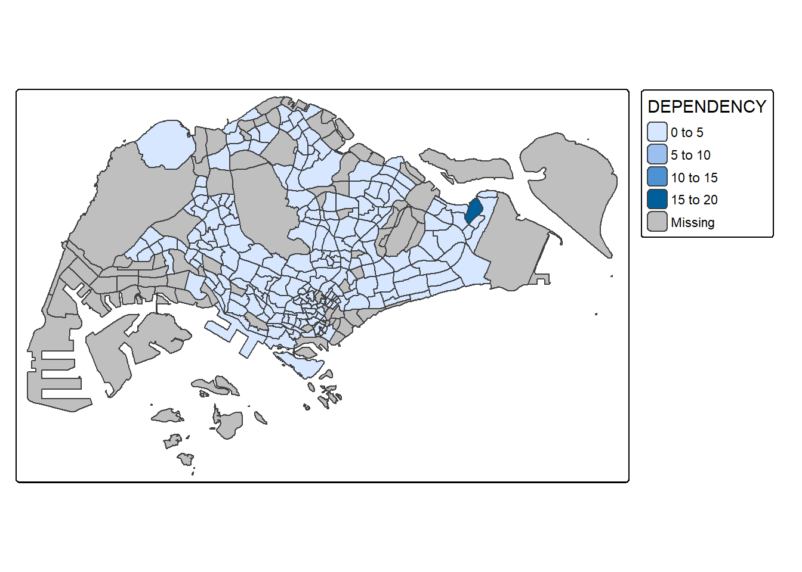
Drawing a choropleth map using tm_fill() and *tm_border()
Actually, tm_polygons() is a wraper of tm_fill() and tm_border(). tm_fill() shades the polygons by using the default colour scheme and tm_borders() adds the borders of the shapefile onto the choropleth map.
The alpha argument is used to define transparency number between 0 (totally transparent) and 1 (not transparent). By default, the alpha value of the col is used (normally 1).
Beside alpha argument, there are three other arguments for tm_borders(), they are:
- col = border colour,
- lwd = border line width. The default is 1, and
tm_shape(mpsz_pop2020)+
tm_fill("DEPENDENCY") 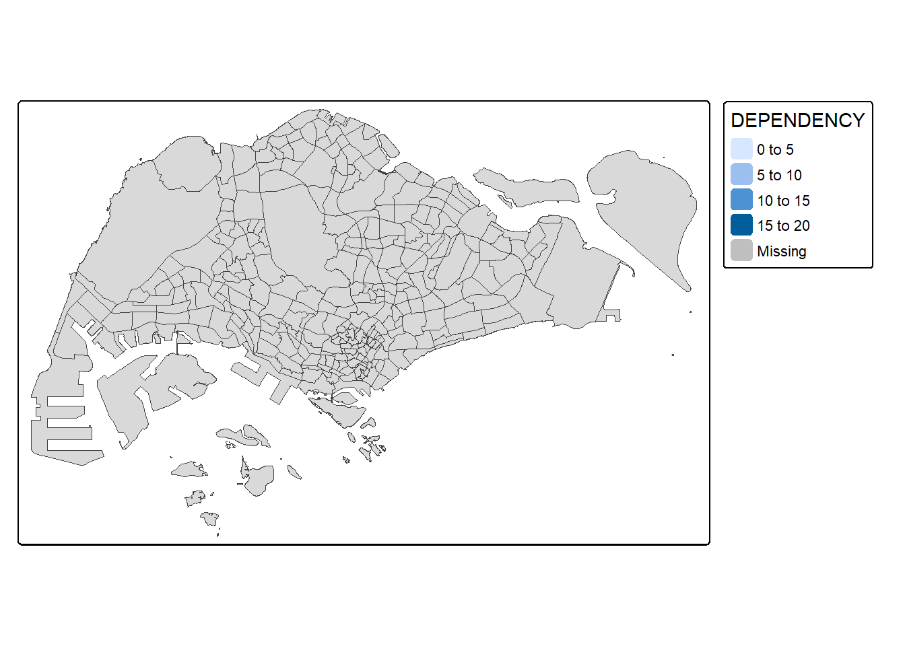
tm_shape(mpsz_pop2020)+
tm_fill("DEPENDENCY") +
tm_borders(lwd = 0.1, alpha = 1) 
3.3 Data classification methods of tmap
Most choropleth maps employ some methods of data classification. The point of classification is to take a large number of observations and group them into data ranges or classes.
tmap provides a total ten data classification methods, namely: fixed, sd, equal, pretty (default), quantile, kmeans, hclust, bclust, fisher, and jenks.
To define a data classification method, the style argument of tm_fill() or tm_polygons() will be used.
Look for natural breakpoints in the data that minimize variability within each category and maximize variability between categories.
Applicable scenarios: When the data is unevenly distributed, this method can more effectively reflect the intrinsic structure of the data, such as housing prices, geographical data, etc.
tm_shape(mpsz_pop2020)+
tm_fill("DEPENDENCY",
n = 5,
style = "jenks") +
tm_borders(alpha = 0.5)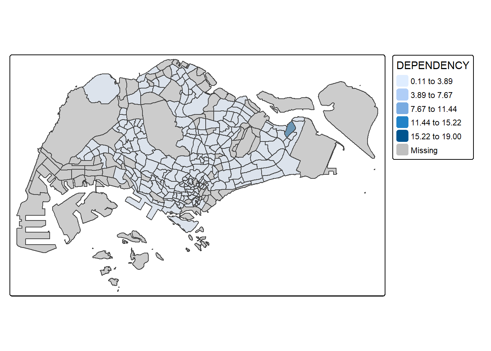
Divide the data range evenly into N intervals, each interval being equal in width.
tm_shape(mpsz_pop2020)+
tm_fill("DEPENDENCY",
n = 5,
style = "equal") +
tm_borders(alpha = 0.5)
Caution
Notice that the distribution of quantile data classification method are more evenly distributed then equal data classification method.
Divide the data according to its quantile (percentage), for example: -
- quartiles
- quintiles
- deciles
Applicable scenarios: When the data distribution is uneven, this method ensures that the number of data in each interval is similar. For example, house price analysis, income analysis, etc.
tm_shape(mpsz_pop2020)+
tm_fill("DEPENDENCY",
n = 5,
style = "quantile") +
tm_borders(alpha = 0.5)
Classify based on the distribution characteristics of the data itself, rather than dividing intervals evenly.
Applicable scenarios: When the data has obvious natural groupings, such as population age structure, economic status, etc.
tm_shape(mpsz_pop2020)+
tm_fill("DEPENDENCY",
n = 5,
style = "kmeans") +
tm_borders(alpha = 0.5)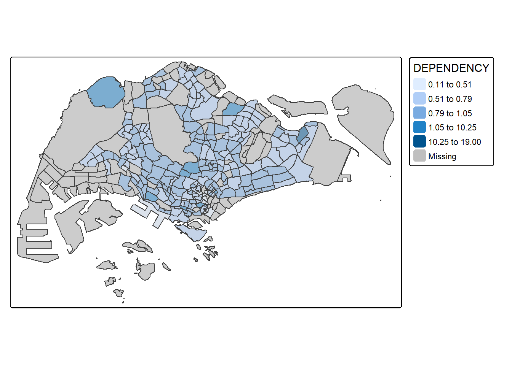
3.3.1 Preparing choropleth maps based on different numbers of classes
tm_shape(mpsz_pop2020)+
tm_fill("DEPENDENCY",
n = 2,
style = "jenks") +
tm_borders(alpha = 0.5)
tm_shape(mpsz_pop2020)+
tm_fill("DEPENDENCY",
n = 6,
style = "jenks") +
tm_borders(alpha = 0.5)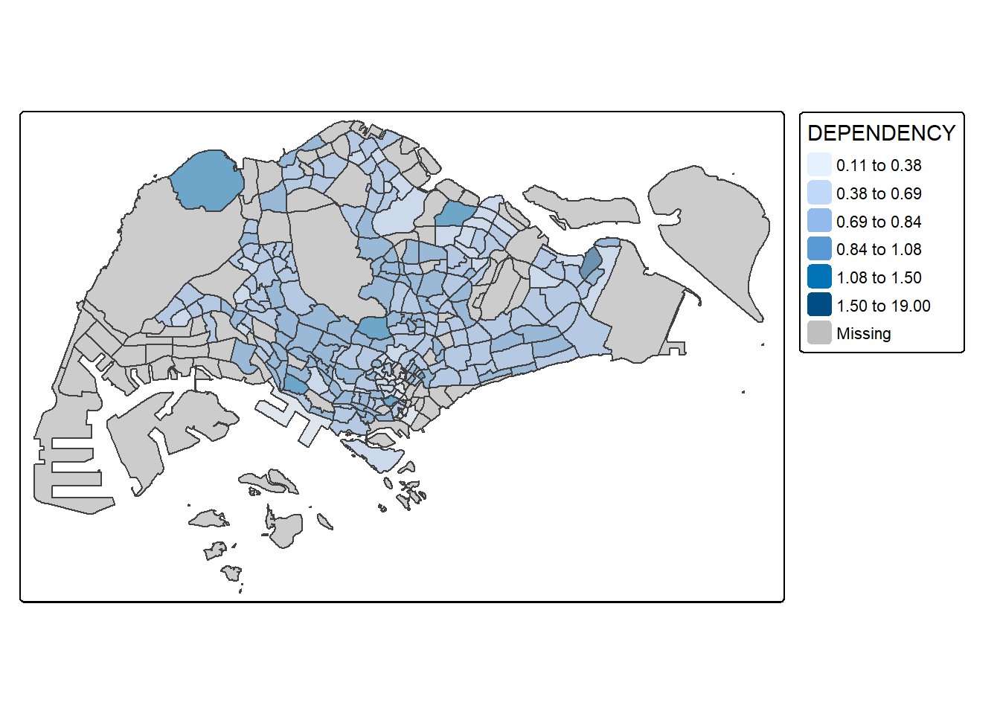
tm_shape(mpsz_pop2020)+
tm_fill("DEPENDENCY",
n = 10,
style = "jenks") +
tm_borders(alpha = 0.5)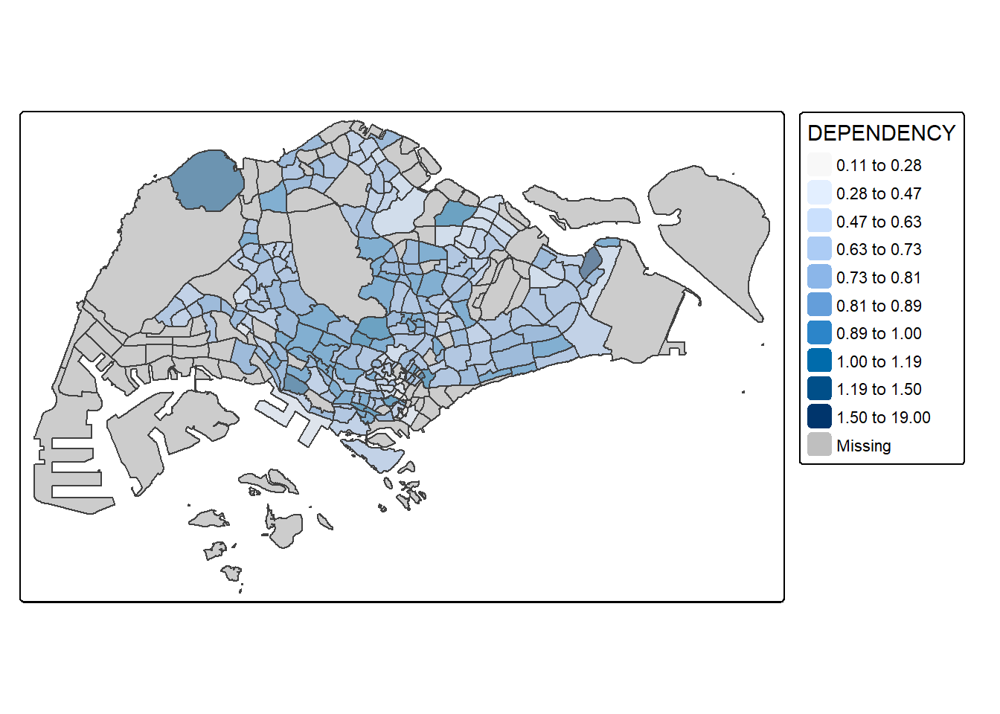
tm_shape(mpsz_pop2020)+
tm_fill("DEPENDENCY",
n = 20,
style = "jenks") +
tm_borders(alpha = 0.5)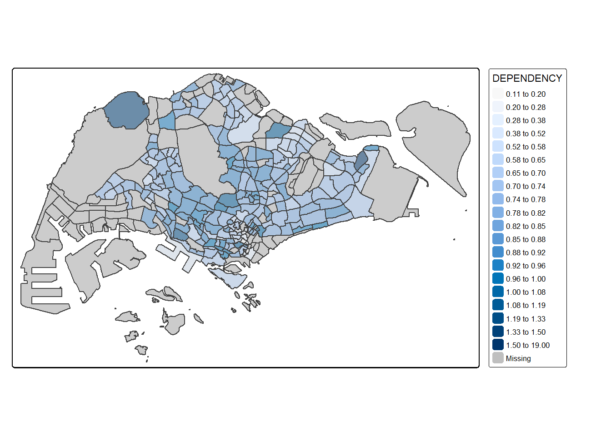
Observations & Comparisons
2 Classes (Low granularity)
The map provides a very generalized view, dividing the areas into just two broad categories.
It may hide important variations within the dataset.
Useful for quick, high-level insights.
6 Classes (Moderate granularity)
A more balanced representation with clearer differentiation.
It provides better detail while maintaining readability.
Suitable for most general analysis.
10 Classes (High granularity)
More detailed but might introduce complexity.
The color variations may become harder to distinguish.
Good for in-depth analysis.
20 Classes (Over-segmentation)
Too detailed and may create excessive color variations.
Harder to interpret patterns.
Only useful when precise differences matter, such as in scientific analysis.
3.3.2 Custome break point
The breakpoints can be set explicitly by means of the breaks argument to the tm_fill(). It is important to note that, in tmap the breaks include a minimum and maximum. As a result, in order to end up with n categories, n+1 elements must be specified in the breaks option (the values must be in increasing order).
Now, get some descriptive statistics on the variable before setting the break points.
summary(mpsz_pop2020$DEPENDENCY) Min. 1st Qu. Median Mean 3rd Qu. Max. NA's
0.1111 0.7147 0.7866 0.8585 0.8763 19.0000 92 With reference to the results above, we set break point at 0.60, 0.70, 0.80, and 0.90. In addition, we also need to include a minimum and maximum, which we set at 0 and 100. Our breaks vector is thus c(0, 0.60, 0.70, 0.80, 0.90, 1.00).
tm_shape(mpsz_pop2020)+
tm_fill("DEPENDENCY",
breaks = c(0, 0.60, 0.70, 0.80, 0.90, 1.00)) +
tm_borders(alpha = 0.5)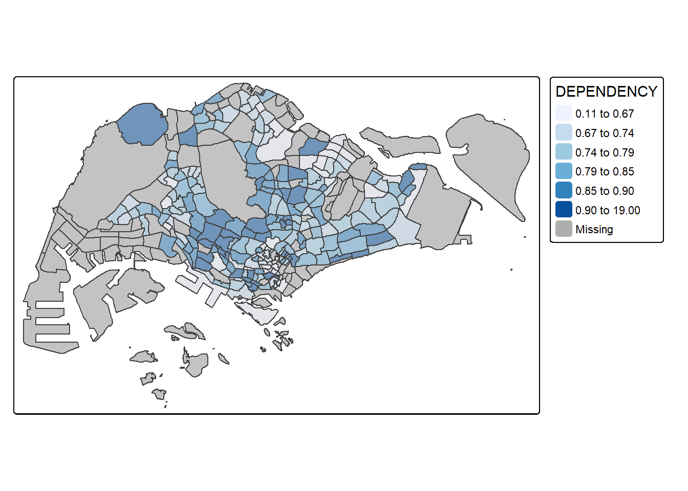
3.4 Color Schceme
tmap supports colour ramps either defined by the user or a set of predefined colour ramps from the RColorBrewer package.
To change the colour, we assign the preferred colour to palette argument of tm_fill() as shown in the code chunk below.
tm_shape(mpsz_pop2020)+
tm_fill("DEPENDENCY",
n = 6,
style = "quantile",
palette = "Blues") +
tm_borders(alpha = 0.5)
To reverse the colour shading, add a “-” prefix.
tm_shape(mpsz_pop2020)+
tm_fill("DEPENDENCY",
style = "quantile",
palette = "-Greens") +
tm_borders(alpha = 0.5)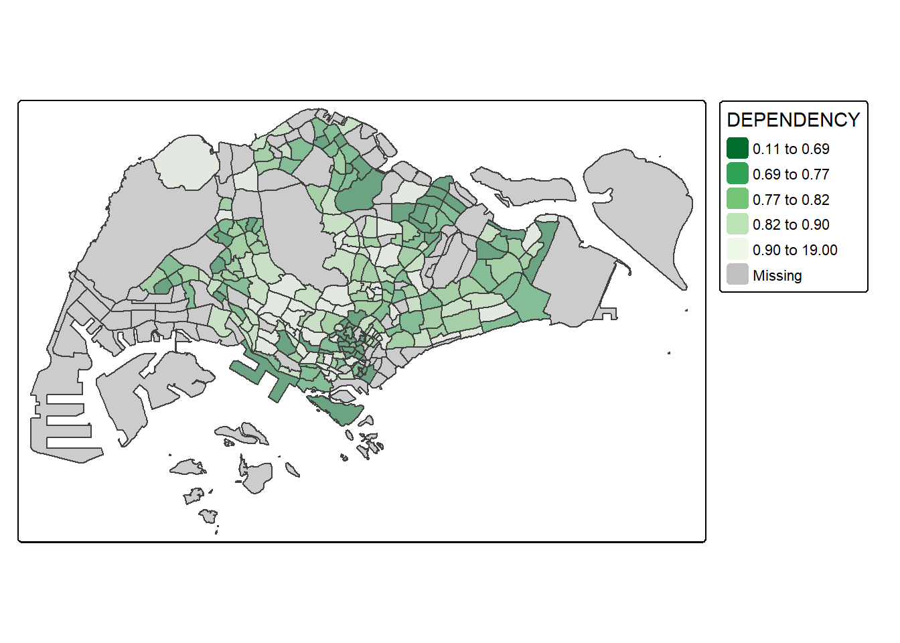
🛠️3.5 Map Layouts
Map layout refers to the combination of all map elements into a cohensive map. Map elements include among others the objects to be mapped, the title, the scale bar, the compass, margins and aspects ratios. Colour settings and data classification methods covered in the previous section relate to the palette and break-points are used to affect how the map looks.
3.5.1 Map legend
Things to learn from code
tm_fill:
legend.hist = TRUE: Display a histogram of the data in the legend to help understand the distribution of quantities in different categories.
legend.is.portrait = TRUE: Legends are arranged vertically (vertically).
legend.hist.z = 0.1: Set the size of the histogram, a value of 0.1 represents a smaller histogram.
tm_layout: set the map title and legend
legend.outside = FALSE: The legend is placed inside the map, not outside the map.
legend.position = c(“right”, “bottom”)： The legend appears in the lower right corner.
frame = FALSE: Map borders are not drawn.
tm_shape(mpsz_pop2020)+
tm_fill("DEPENDENCY",
style = "jenks",
palette = "Blues",
legend.hist = TRUE,
legend.is.portrait = TRUE,
legend.hist.z = 0.1) +
tm_layout(main.title = "Distribution of Dependency Ratio by planning subzone \n(Jenks classification)",
main.title.position = "center",
main.title.size = 1,
legend.height = 0.45,
legend.width = 0.35,
legend.outside = FALSE,
legend.position = c("right", "bottom"),
frame = FALSE) +
tm_borders(alpha = 0.5)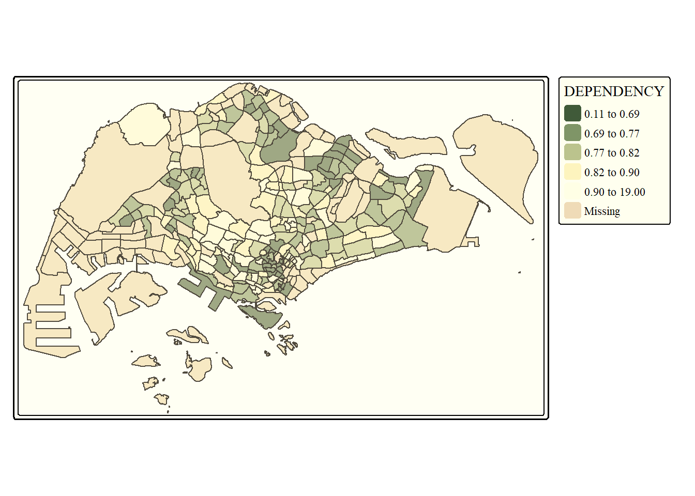
3.5.2 Map style
tmap allows a wide variety of layout settings to be changed. They can be called by using tmap_style().
classic style
tm_shape(mpsz_pop2020)+
tm_fill("DEPENDENCY",
style = "quantile",
palette = "-Greens") +
tm_borders(alpha = 0.5) +
tmap_style("classic")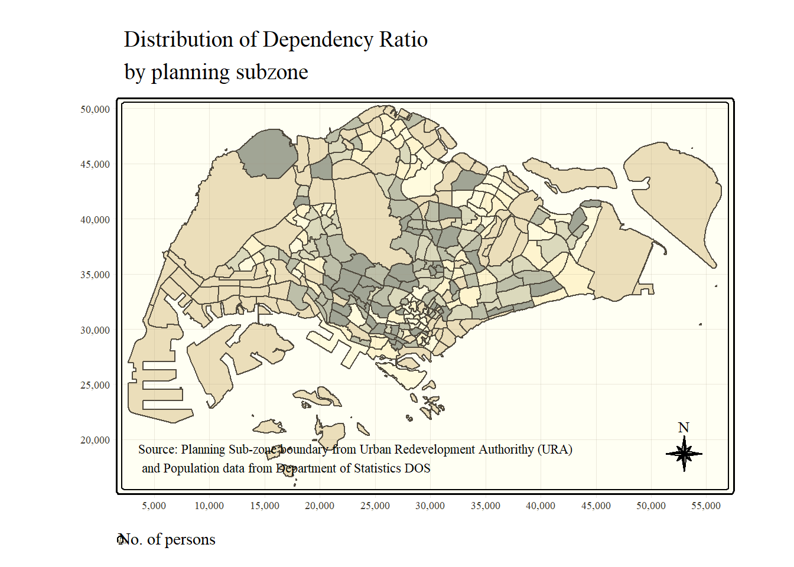
🛠️3.5.3 Cartographic Furniture
Beside map style, tmap also also provides arguments to draw other map furniture such as compass, scale bar and grid lines.
Add compass
tm_compass() type = “8star”： Use the 8-way star compass to indicate directions on the map. size = 2: Adjust compass size.
Add grid
tm_grid(alpha = 0.2): Add grid lines (Grid) to the map with an opacity of 0.2 to provide geographical reference points.
tm_credits() is used to indicate data sources.
tm_shape(mpsz_pop2020)+
tm_fill("DEPENDENCY",
style = "quantile",
palette = "Blues",
title = "No. of persons") +
tm_layout(main.title = "Distribution of Dependency Ratio \nby planning subzone",
main.title.position = "center",
main.title.size = 1.2,
legend.height = 0.45,
legend.width = 0.35,
frame = TRUE) +
tm_borders(alpha = 0.5) +
tm_compass(type="8star", size = 2) +
tm_grid(lwd = 0.1, alpha = 0.2) +
tm_credits("Source: Planning Sub-zone boundary from Urban Redevelopment Authorithy (URA)\n and Population data from Department of Statistics DOS",
position = c("left", "bottom"))
tmap_mode("plot")Can reset the default by doing this
tmap_style("white")3.6 Drawing Small Multiple Choropleth Maps
Small multiple maps, also referred to as facet maps, are composed of many maps arrange side-by-side, and sometimes stacked vertically. Small multiple maps enable the visualisation of how spatial relationships change with respect to another variable, such as time.
In tmap, small multiple maps can be plotted in three ways:
- by assigning multiple values to at least one of the asthetic arguments,
- by defining a group-by variable in tm_facets(), and
- by creating multiple stand-alone maps with tmap_arrange().
🛠️3.6.1 By assigning multiple values to at least one of the aesthetic arguments
tm_fill(c(“YOUNG”, “AGED”)): Two variables are displayed here at the same time, namely: YOUNG and AGED
tmap_style() is one of the preset styles provided by tmap, you can choose from:
“classic”: classic style
“cobalt”: blue background
“albatross”: gray background
“white”: white background (suitable for reports or papers)
tm_shape(mpsz_pop2020)+
tm_fill(c("YOUNG", "AGED"),
style = "equal",
palette = "Blues") +
tm_layout(legend.position = c("right", "bottom")) +
tm_borders(alpha = 0.5) +
tmap_style("white")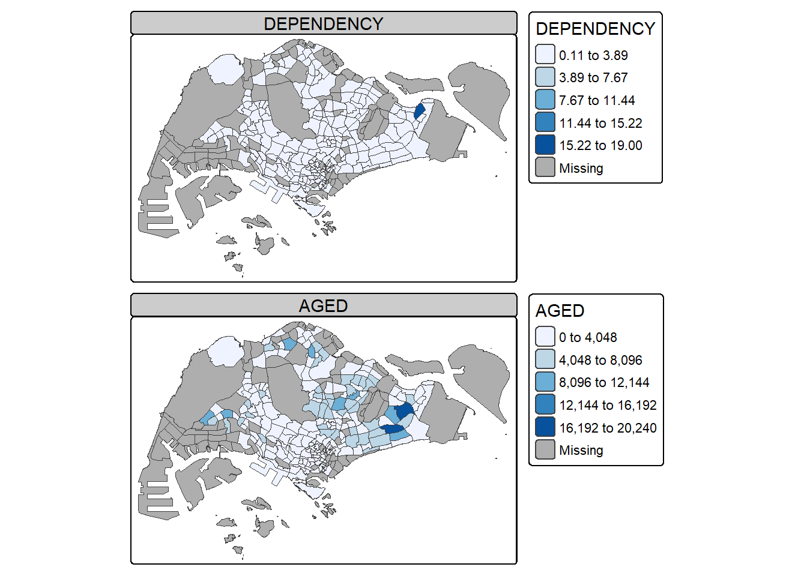
In this example, small multiple choropleth maps are created by assigning multiple values to at least one of the aesthetic arguments.
???
tm_shape(mpsz_pop2020)+
tm_polygons(c("DEPENDENCY", "AGED"),
style = c("equal", "quantile"),
palette = list("Blues", "-Greens")) 
tm_layout(legend.position = c("right", "bottom"))🛠️3.6.2 Defining a group-by variable in tm_facets()
multiple small choropleth maps are created by using tm_facets().
There is a NA in the data, so the code can’t run. Therefore, I will update later till prof release the file.( do not want to do the change, cause I afraid there will be an error.
str(mpsz_pop2020$DEPENDENCY) num [1:323] NA 1.161 0.25 0.938 0.771 ...3.6.3 Creating multiple stand-alone maps: tmap_arrange()
In this example, multiple small choropleth maps are created by creating multiple stand-alone maps with tmap_arrange().
youngmap <- tm_shape(mpsz_pop2020)+
tm_polygons("YOUNG",
style = "quantile",
palette = "Blues")
agedmap <- tm_shape(mpsz_pop2020)+
tm_polygons("AGED",
style = "quantile",
palette = "Blues")
tmap_arrange(youngmap, agedmap, asp=1, ncol=2)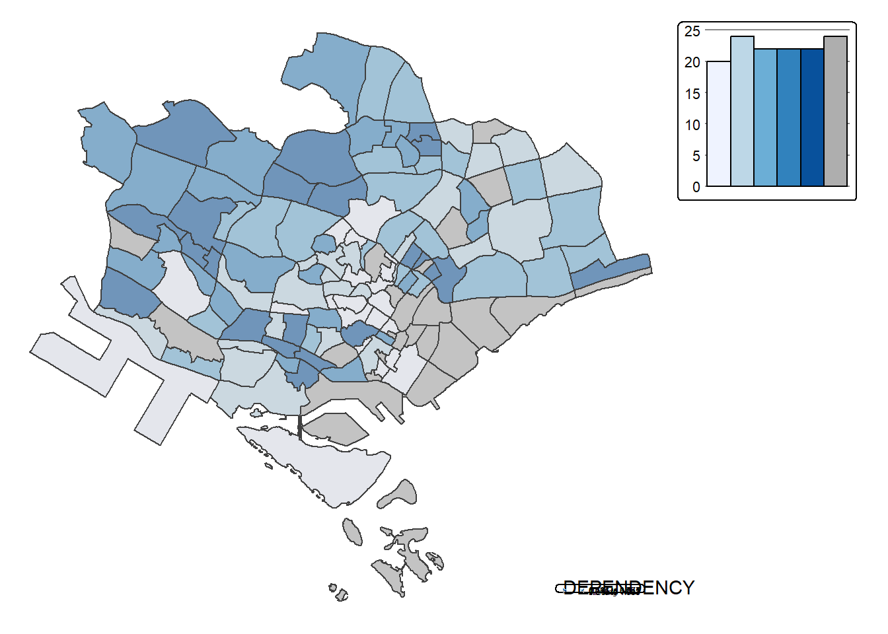
🛠️3.7 Mappping Spatial Object Meeting a Selection Criterion
tm_shape(mpsz_pop2020[mpsz_pop2020$REGION_N=="CENTRAL REGION", ])+
tm_fill("DEPENDENCY",
style = "quantile",
palette = "Blues",
legend.hist = TRUE,
legend.is.portrait = TRUE,
legend.hist.z = 0.1) +
tm_layout(legend.outside = TRUE,
legend.height = 0.45,
legend.width = 5.0,
legend.position = c("right", "bottom"),
frame = FALSE) +
tm_borders(alpha = 0.5)